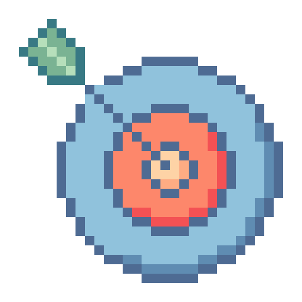
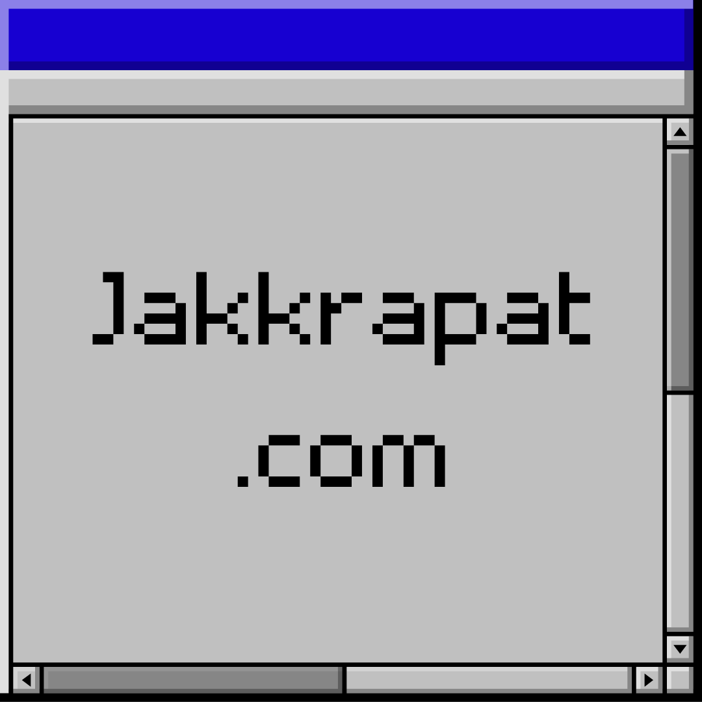

Guitar's Core Value
Hapiness
Money

Business
Learning
My Online Corner of the Internet! 👋
README.TXT
อดีตพนักงานประจำ เปลี่ยนงานมาเรื่อยๆ เพราะหาตัวเองไม่เจอซักที (ปกติเด็กไทยและมั้งฮ่าๆ) มีความสนใจหลากหลายและอยากใช้ชีวิต เลยพยายามหาวิธีสร้าง Internet Income Stream (เครื่องผลิตเงินบนโลกออนไลน์) จนมีรายได้แซงงานประจำหลายเท่าตัว และกำลังใช้ชีวิตแบบที่ตัวเองตอนเด็กๆ เคยฝันไว้เลย :D
ด้วยพลังของ AI และ Automation มันทำให้ทุกอย่างง่ายขึ้นเยอะ มีวันนึงผมแช่ออนเซ็นกับเพื่อนในช่วงเช้าวันจันทร์แล้วก็บอกมันว่า "ถ้าทุกคนมีชีวิตแบบนี้ก็ดีเนอะ แฮปปี้ โลกคงวุ่นวายน้อยกว่านี้" เลยอยากแชร์สิ่งที่ตัวเองได้เรียนรู้และช่วยให้เพื่อนๆ สร้าง Internet Income Stream ของตัวเองขึ้นมาค้าบ
Current Status:
- Writing for Dead Simple Productivity
- Creating Website Fastlane
- Daddy to be in 4 weeks!!
1 object(s) selected
My Computer

Jakkrapat.com
This Website (เว็บนี้แหละ55)
C:\Users\Jakkrapat\Documents\Resources
6 object(s) selected
My Computer
Contact Information
4 object(s) selected
My Computer